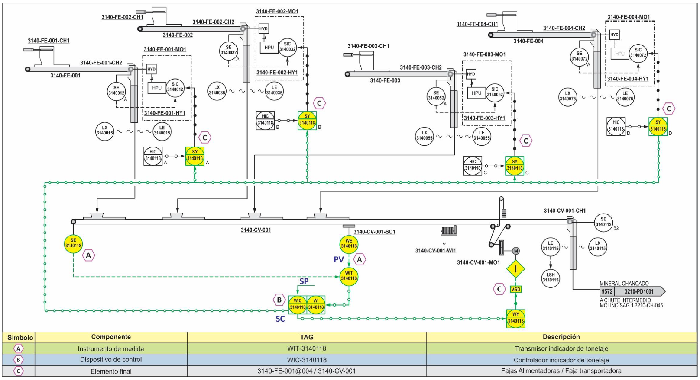
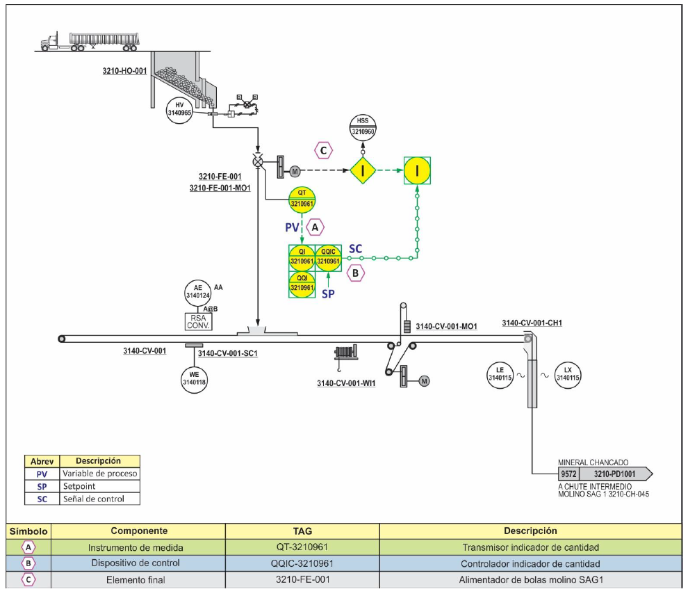
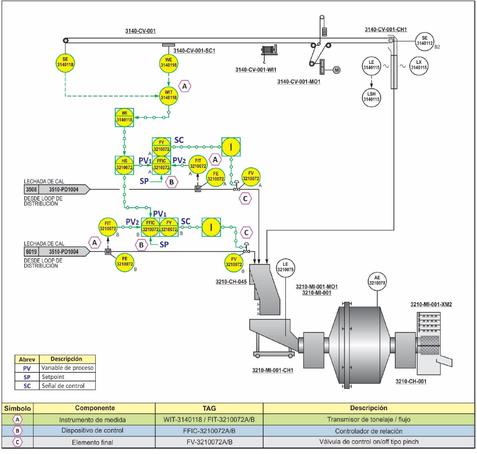
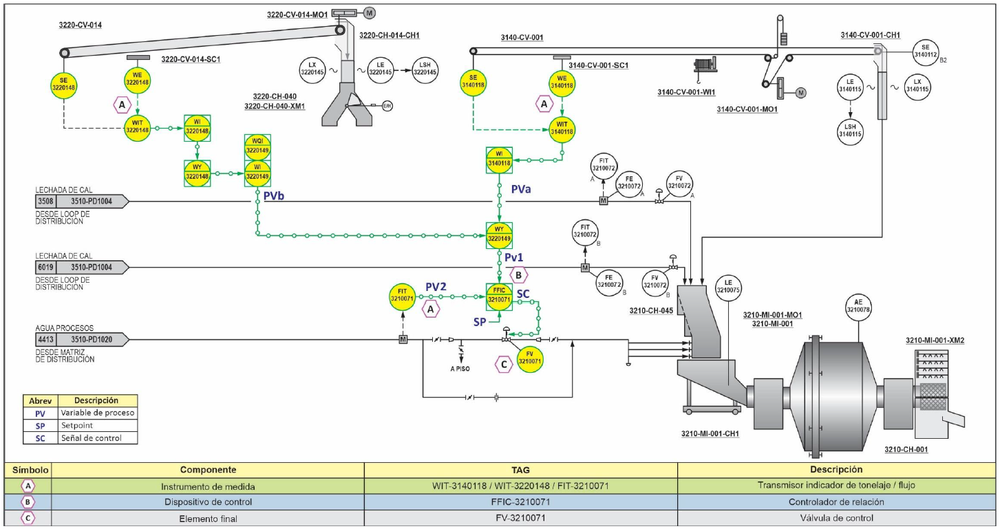
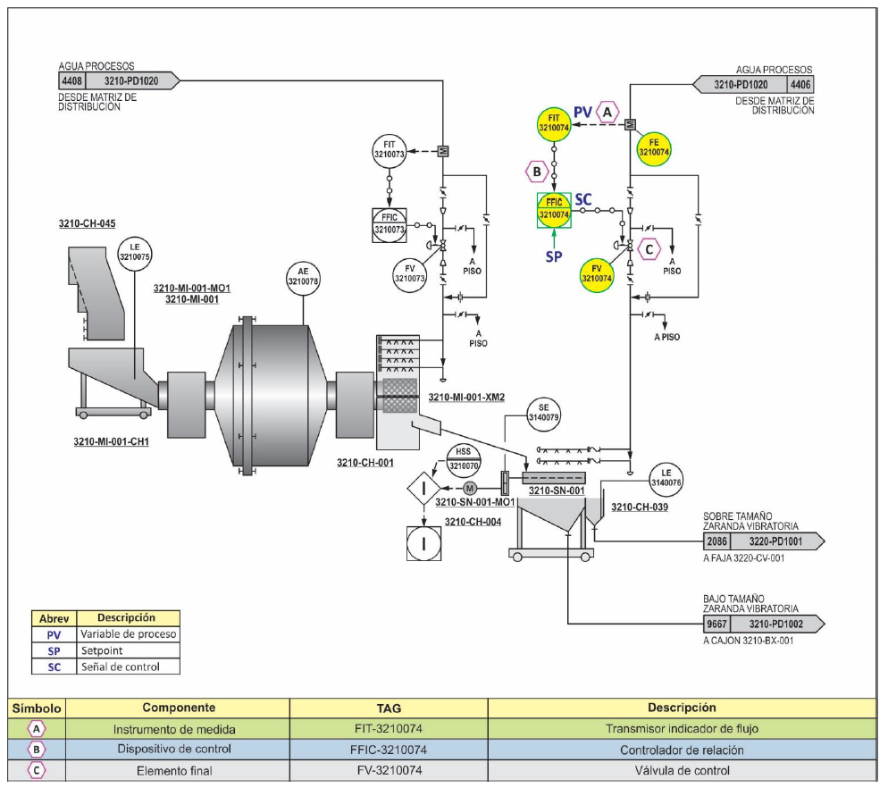
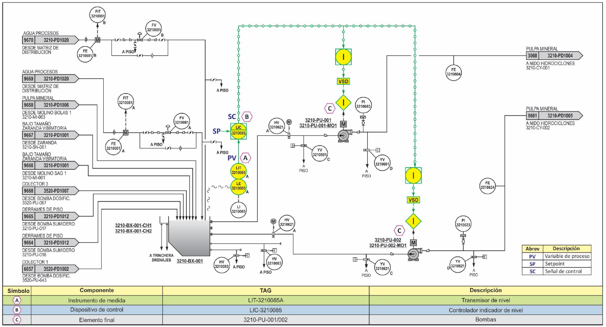
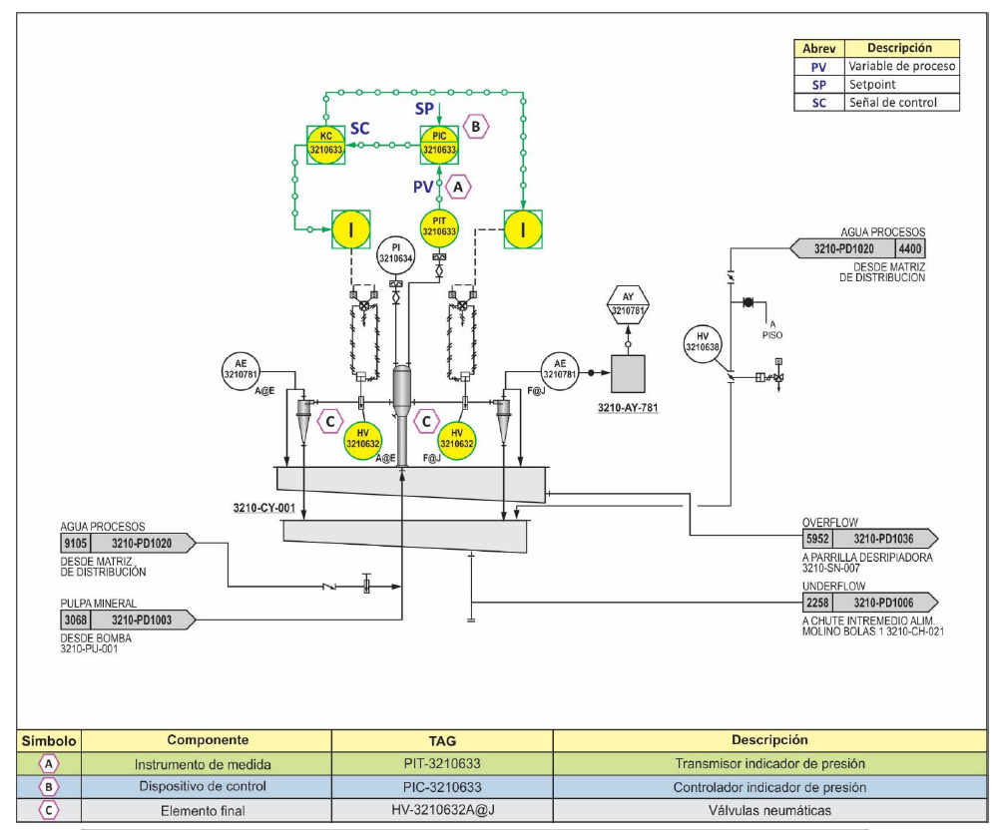
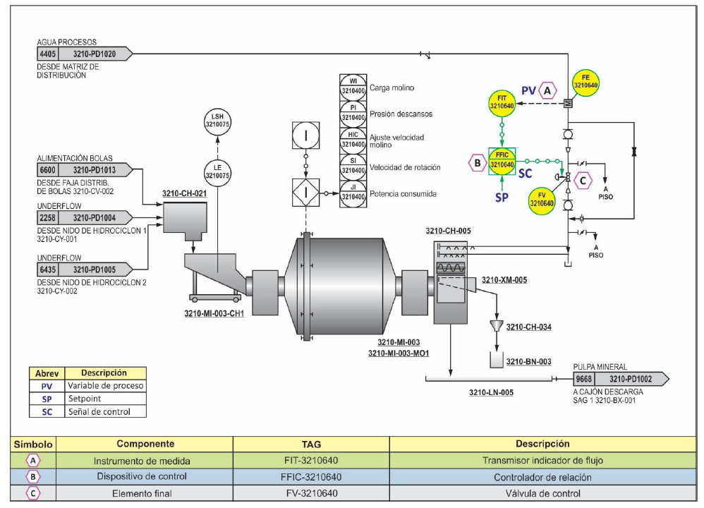

Control de Flujo Másico de Mineral Fresco
Control de flujo másico de mineral fresco a molino SAG 1. Este control es fundamental para mantener la alimentación constante y optimizar el proceso de molienda en el molino SAG, asegurando una operación eficiente y estable.

Control de Adición de Bolas
Control de adición de bolas a faja transportadora de alimentación a molino SAG 1. La dosificación precisa de bolas es esencial para mantener el medio de molienda adecuado y garantizar la eficiencia del proceso.

Control de Adición de Lechada de Cal
Control de adición de lechada de cal al chute intermedio de alimentación al molino SAG 1. Este control regula el pH del proceso, optimizando las condiciones químicas para la flotación posterior.

Control de Dilución
Control de dilución en la alimentación del molino SAG 1. La regulación de la dilución es crucial para mantener la densidad de pulpa óptima y asegurar un rendimiento eficiente del molino.

Control de Flujo de Agua a Zaranda
Control de flujo de agua a la zaranda vibratorio del molino SAG 1. Este control optimiza la separación por tamaño y mejora la eficiencia del proceso de clasificación del material molido.

Control de Nivel de Pulpa
Control de nivel de pulpa en el cajón descarga molino SAG 1. Mantener el nivel adecuado es fundamental para el flujo continuo del proceso y evitar problemas operacionales.

Control de Presión en Distribuidor
Control de presión en el distribuidor nido de hidrociclones. La regulación de presión es esencial para optimizar la clasificación y separación de partículas en los hidrociclones.
Control de Temperatura de Aceite
Control de temperatura de aceite a la salida del reservorio del sistema de lubricación molino bolas 1. Este control protege los equipos y garantiza una lubricación adecuada para el funcionamiento óptimo.

Control de Flujo de Agua al Trunnion
Control de flujo de agua al Trunnion magnético molino bolas 1. Este control asegura el enfriamiento adecuado del sistema magnético y mantiene la eficiencia de separación magnética.
1 de 9